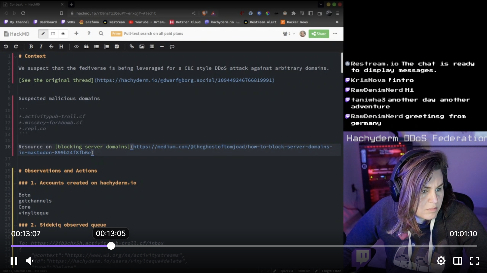

Working In The Open

The other day my daughter asked me about Software Engineering -- what do we actually do? She's eighteen and probably won't follow in my footsteps, which is fine, but I still want her to see my field.
I've always found this question hard to answer. I've been an engineering manager for a long time, and I'm happy to describe that job (emails, 1:1's, PRD reviews), but I don't think that's the heart of it. Plus these days I work for Google where things there are proprietary and deeply layered, not much help for answering questions like these.
Recently I've found my way to Mastodon for obvious reasons. I chose the Hachyderm instance because it was well run by people who shared my values. It turns out that the values of the owners and operators of the things we use matter, huh.
I then learned a cool thing, that the Hachyderm admins do much of their work publicly. They livestream debugging sessions on Twitch, they write postmortems, they share live graphs. @nova happened to be live-streaming at that moment, not surprising since the team's been busy absorbing thousands of new users and fending off attacks. My daughter and I watched a bit together.
Team Hachyderm (@nova @dma @quintessence @Taniwha @hazelweakly @malte): thank you for running this service well. But also thank you for giving me something I'm proud to use and proud to show my kid.
Comments
Comments powered by Disqus